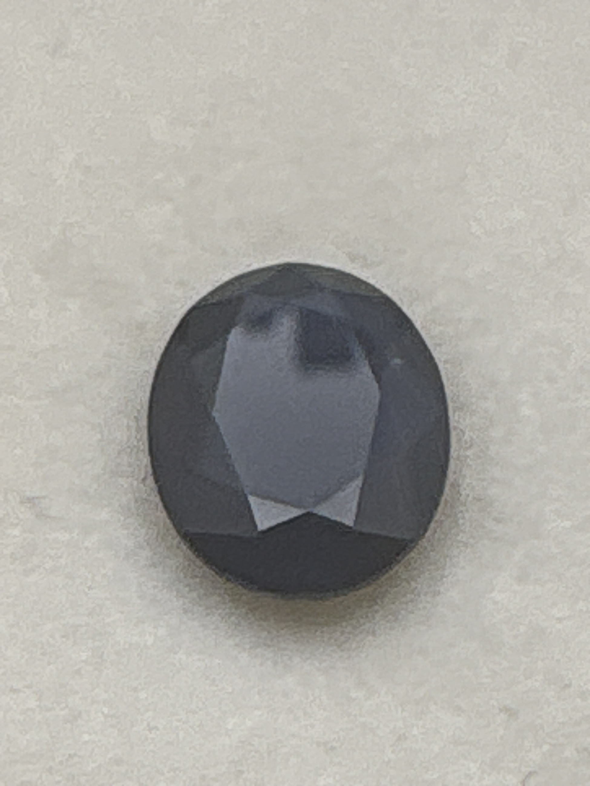

The Gem Drawer › No. 69

A very deep blue 9 x 7 mm oval; the Burmese origin claim is unverified.
| Catalogue no. | #69 |
|---|---|
| As labeled | Sapphire - labeled "Burmese Blue Sapphire" (origin claim not verifiable without a lab report; recommend one if pricing depends on it, see notes) |
| Shape / cut | Oval |
| Weight | 2.71 ct |
| Measurements | 9x7mm oval |
| Colour | Deep blue (very dark tone) |
| Clarity / condition | Not recorded |
Interested in this stone, or in the collection as a whole? Terry VanWormer can answer questions about it.
Click here to inquireor email Terry directly at maxrebo34@gmail.com